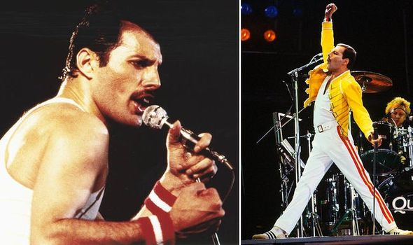
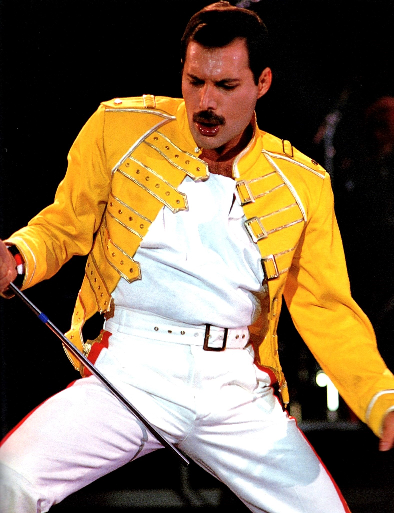
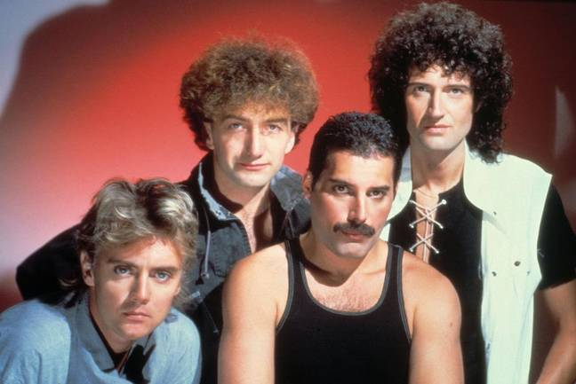
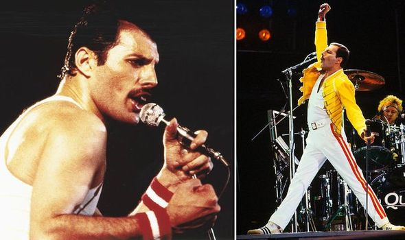
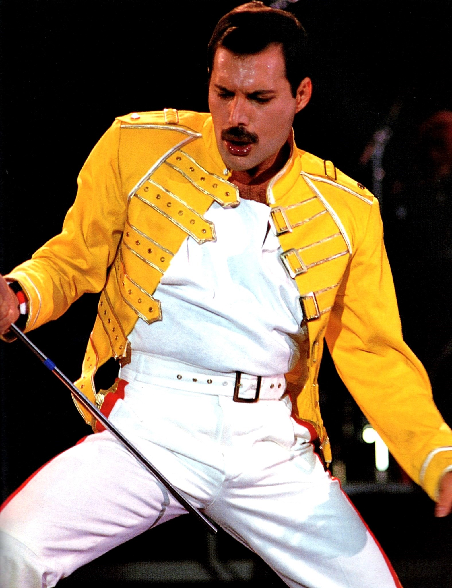
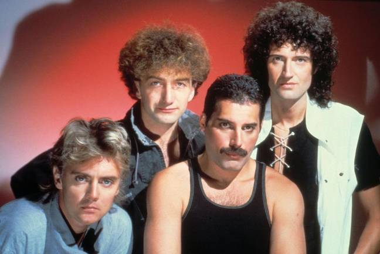

Welcome To Biography of Freddie Mercury...
 





About Freddie...
Mercury was born Farrokh Bulsara in Stone Town in the British protectorate of Zanzibar (now part of Tanzania) on 5 September 1946.
His parents, Bomi (1908–2003) and Jer Bulsara (1922–2016),were from the Parsi community of western India.
The Bulsaras had origins in the city of Bulsar (now Valsad) in Gujarat.He had a younger sister, Kashmira.
Freddies's life...
- Born:
- Farrokh Bulsara
5 September 1946
Stone Town, Sultanate of Zanzibar - Died:
- 24 November 1991 (aged 45)
London, England - Cause of death:
- Bronchopneumonia as a complication of AIDS
- Nationality:
- British
- Other names:
- Freddie Bulsara
Larry Lurex - Education:
- St. Peter's School
Panchgani - Alma mater:
- Isleworth Polytechnic
College
Ealing Art College - Occupation:
- Singer
Songwriter
Record producer - Years active:
- 1969–1991
- Partner(s):
- Mary Austin (1970–1976)
Jim Hutton (1985–1991) - Parent(s):
- Bomi Bulsara (1908–2003)
Jer Bulsara (1922–2016)
Musical career...
- Genres:
- Rock
- Instruments:
-
Vocals
Keyboards - Labels:
-
Columbia
Polydor
EMI
Parlophone
Hollywood - Associated acts:
- Queen
Montserrat Caballé
Signature...

Most Popular Songs:
- We Will Rock You...!
- Bohemian Rhapsody...!
- Don't Stop Me Now...!
- Another One Bites the Dust...!
- I Want To Break Free...!